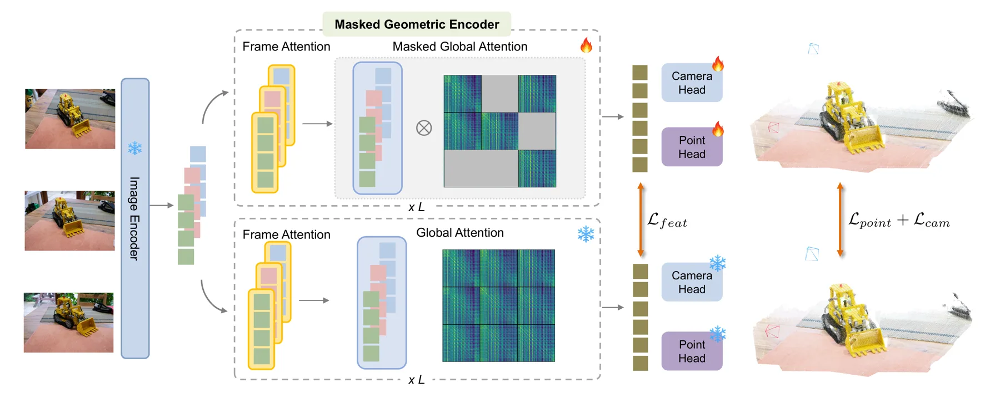
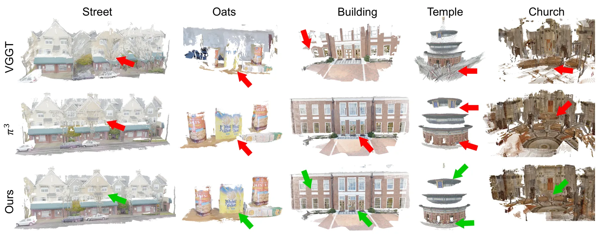
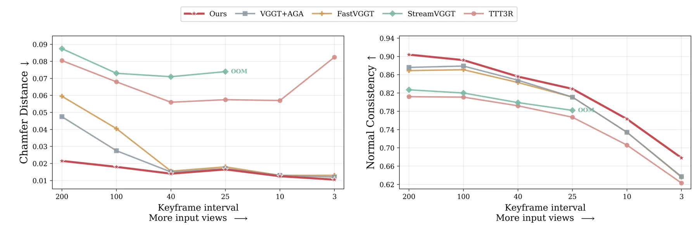
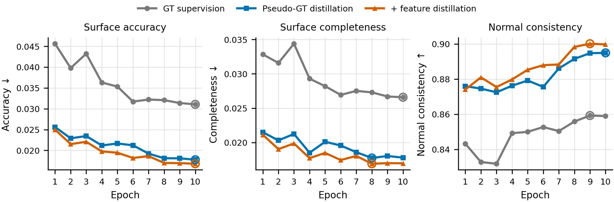
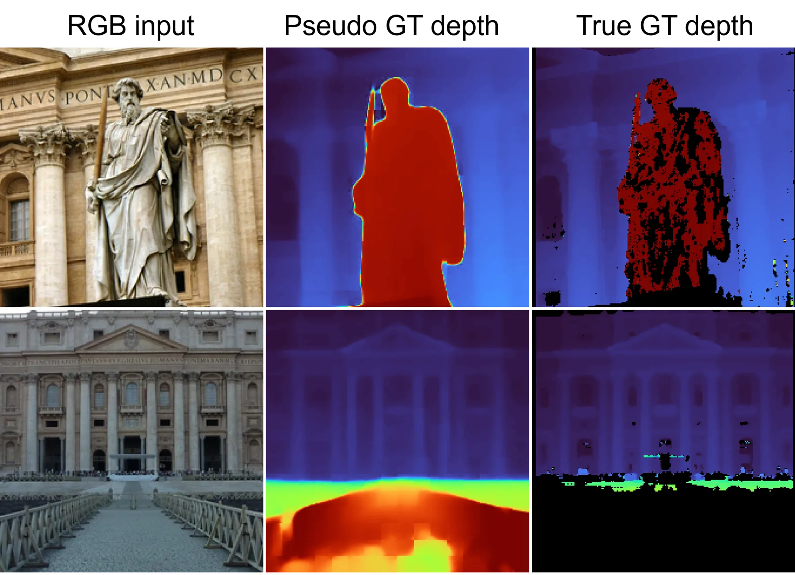
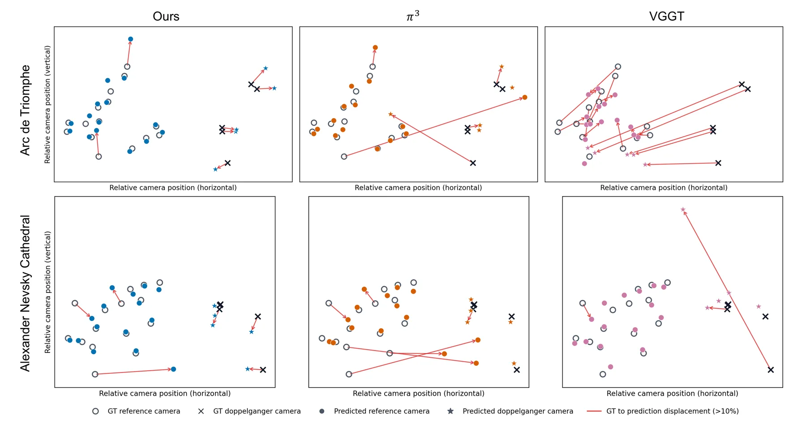

更少上下文，更好几何：面向鲁棒 3D 基础模型的掩码几何编码器
Less Context, Better Geometry: Masked Geometric Encoder for Robust 3D Foundation Models
训练时随机掩掉帧间全局注意力（Bernoulli 掩码率 ρ），向冻结全上下文教师 π³ 做特征+几何双级自蒸馏；推理期用锚帧引导的自适应 token 合并。遮挡大场景下点精度误差仅增 48%（VGGT/π³ 分别 +119%/+128%），8 万级歧义基准 cross-pair 位姿最优。
AUC@30
Acc. drift
ATE
mask ratio
作者、单位与技术谱系 · Research context
作者与单位
研究脉络
- π³（Wang et al., ICLR 2026，参考 Wang et al. 2026e）方法基座关系：以 π³ 为默认教师与学生初始化，沿用其点图/法向/置信度/相对相机位姿的损失形式。[论文 §3.3、§A.2]
- SPIDER（Shao, Yadav, Chellappa, Peng, CVPR 2026）团队前作关系：第一作者与通讯作者组的前置工作，问题意识（鲁棒标定与视觉歧义/错误对应）直接延续。[论文 §2 与参考文献 Shao et al. (2026)]
- Doppelgangers（Cai et al., 2023）/ Doppelgangers++（Xiangli et al., 2025）方法上游关系：定义了‘外观相似但几何不同’的歧义问题与其裁剪思路，MGE 据此建立评测并把它扩展为训练期正则。[论文 §1、§4.3]
- FastVGGT（Shen et al., 2025）/ ToMe（Bolya et al., 2022）方法基座关系：token 合并机制与 AGA 实现基础，并被作为对比基线。[论文 §3.4、§4.5]
合作网络
- JHU ↔ UVA 跨机构共同署名Johns Hopkins University（Shao、Liu、Zhang、Tang、Yadav、Chellappa） → University of Virginia（Cheng Peng）关系：共同署名[arXiv 首页署名]
- JHU ECE 内部同系署名Zhimin Shao → Rama Chellappa关系：共同署名（同单位）[arXiv 首页署名]
- 对 π³ 与 FastVGGT/ToMe 的技术依赖MGE → π³（Wang et al.）/ FastVGGT（Shen et al.）关系：明确技术依赖（非共同署名）[论文 §3.3、§3.4]
作者与单位来自论文首页署名；谱系依据正文引用与同作者作品标注为‘基于来源的解读’。合作边仅记录共同署名与技术依赖，未推断师生关系。本工作受 IARPA R&D 合同资助。
方法本质拆解 · What actually changed
是不是微调？
是从预训练教师初始化的继续训练：图像编码器（DINOv2）与教师全程冻结，被训练的是多视图编码器（交替帧/全局注意力）与预测头；AdamW、warm-up 0.5 epoch + 余弦、峰值 lr=1e-6、batch 24 帧、4×H200 6 天。监督来自冻结教师（π³）的伪几何，而非直接稀疏真值。因此权重确实变了，但集中在多视图编码器，属于‘冻结视觉编码器 + 训练跨视角编码器’的蒸馏范式。
有没有额外约束？
新增的核心约束是训练期的帧级注意力掩码：A_ij~Bernoulli(1−ρ)、对角保留，扩展为 token 级 −∞ 掩码只作用于全局注意力；以及几何+特征双级蒸馏损失（点图尺度不变 + 法向 + 置信度 + 相对相机位姿 + register/image token 余弦）。约束作用在多视图编码器的跨视角交互与最终表征上，不改变帧内注意力与输入接口。
推理/后端到底做了什么？
推理期用固定权重，没有额外训练；相对标准 token 合并新增 Anchor-Guided Adaptive 合并：均匀采样锚帧保持全分辨率，非锚帧按冗余度 s_i 分配合并比，经 ToMe 二分匹配合并后再 Unmerge 还原布局，随后照常做全局注意力与预测头。它不是全局 BA 或因子图后端，只是注意力前的帧级 token 压缩策略，可与既有前馈模型即插即用。
方法本质是什么？
本质是：与其让每帧依赖稠密跨视角连接，不如在训练时随机制造‘缺失连接’，逼迫每帧表征自持更丰富的几何上下文，再用冻结教师维持不退化。它改变的是逐帧表征对不可靠/缺失跨视角证据的不确定性；推理期把这一鲁棒性转化为更激进的帧级压缩而不掉质量。没有引入新的优化后端，也没有改变模型架构。
输入为多视图图像；改变的位置是训练期在全局注意力上施加随机帧级掩码并向冻结 π³ 教师做几何+特征蒸馏；合并动作是 AGA 按锚帧冗余度为每帧分配自适应 token 合并比；直接效果是遮挡/歧义下更鲁棒的逐帧几何，并支撑更有效的推理期压缩。

动机与问题Motivation
动机与问题
现有 3D 基础模型用稠密的全局注意力聚合多视图信息，但论文指出额外的观测并不总提供可靠几何证据：doppelganger（外观相似但几何不同的结构）会诱发跨视角错误关联，且计算量随帧数二次增长。论文类比传统 SfM 的 view graph：COLMAP 会从挑选的图像对与几何验证对应建立图，并可移除冗余或歧义匹配边来加速或提升标定。由此提出核心问题：3D 基础模型能否学会对‘缺失帧’更鲁棒的表示？作者不掩码图像内容，而是随机移除帧间连接，让网络必须从剩余跨视角交互中恢复一致的 3D 结构。
方法Method
方法总览
MGE 由三部分构成：(1) 掩码几何编码器——用帧级邻接矩阵 A（A_ij~Bernoulli(1−ρ)，对角保持 A_ii=1）扩展为 token 级注意力掩码 M_A，仅作用于全局注意力，帧内注意力不变，因此每帧仍可完整建模自身空间结构；(2) 几何与特征双级蒸馏——学生用掩码注意力、教师用稠密注意力，学生对齐教师的点图/表面法向/置信度/相对相机位姿（几何蒸馏）以及最终层 register 与 image token 的余弦相似度（特征蒸馏）；(3) Anchor-Guided Adaptive token 合并——推理时均匀采样保持全分辨率的锚帧，用锚帧估计其余帧的冗余度并分配自适应合并比。
关键技术细节
主干为 π³ 的多视图编码器（帧注意力与全局注意力交替 L 层）；图像编码器（DINOv2）与初始化自预训练教师，且图像编码器训练时保持冻结、多视图编码器被训练。几何损失为 L_geo = L_points + λ_normal·L_normal + λ_conf·L_conf + λ_cam·L_cam，点图损失按教师深度做尺度不变对齐并对教师目标停止梯度；特征蒸馏按 register/image token 分别做余弦损失。AGA 中每帧描述子由 DINOv2 token 均值池化得到，非锚帧对锚帧集取最大余弦相似度作为冗余分 s_i，再线性映射为合并比 r_i=k·s_i+b 并在总预算 R_target 下校准。训练配置：AdamW，前 0.5 epoch 线性 warm-up + 余弦衰减，峰值 lr=1e-6，batch 24 帧，图像最大边 518 px，4×H200 训练 6 天；λ_normal=1.0、λ_cam=0.1、λ_feat=0.1、λ_img=100，置信度头单独以 λ_conf=0.05 训练。

实验Experiments
实验设置
训练采用 13 个数据集的混合（ARKitScenes、BlendedMVS、Co3Dv2、HyperSim、MegaDepth、MVS-Synth、OmniObject3D、PointOdyssey、ScanNet、Spring、Virtual KITTI、Waymo、WildRGB），覆盖室内外、物体级与场景级、合成与真实、静态与动态。评测分四块：视觉歧义（自建 43 个子集，每个含 15 个几何一致的参考视角 + 5 个外观相似但几何不一致的 doppelganger 视角，伪 GT 由 COLMAP+Doppelgangers++ 生成）、遮挡鲁棒性（ETH3D，用居中白色块按 10%/30%/50% 视角施加小/中/大遮挡）、token 合并性能（NRGBD，按 FastVGGT 的 stride 采样）、标准相机位姿（Sintel、TUM-Dynamics、ScanNet）。重建指标为 Acc./Comp./CD/NC（越低越好/NC 越高越好），轨迹为 Sim(3) 对齐的 ATE、RPE-t、RPE-r，相对位姿为 AUC@30/RRA@15/RTA@15。
实验数字与比较
视觉歧义（表 1，越高越好）：MGE 在 all-pair/reference/cross-pair 三组均最强——All AUC@30 58.68、Reference 70.51、Cross 42.72；对比 VGGT（55.56/65.75/42.21）与 π³（51.23/59.42/39.10）；传统匹配基线 LoFTR 虽在 reference-pair AUC@30 达 88.22，但 cross-pair 仅 16.86。遮挡（表 2）：MGE 在 medium/large 遮挡最佳，large 遮挡 Acc/Comp/NC 为 0.171/0.129/0.847，而 VGGT 0.327/0.224/0.799、π³ 0.278/0.195/0.823；从 clean 到 large，MGE 点精度误差仅 +48%，位姿误差改善约 4%。标准位姿（表 3）：MGE 在 Sintel ATE 0.071（VGGT 0.167、π³ 0.074），在 TUM-Dynamics 与教师持平、ScanNet 略优。NRGBD token 合并（附录表 7）：Ours 在 stride=200 时 Acc/CD/NC 为 0.021/0.0215/0.904，优于 FastVGGT（0.047/0.0595/0.869）与 VGGT+AGA（0.041/0.0475/0.876），且 stride=10 时 StreamVGGT OOM 而本方法仍可运行。
消融/失败边界
掩码率消融（表 4，NRGBD）：ρ=0.3/0.5/0.7 在 stride=100 的 CD 为 0.0150/0.0159/0.0182，NC 为 0.9184/0.9104/0.8983；在 stride=10 的 NC 为 0.7607/0.7660/0.7440。可见掩码过强（ρ=0.7）即使推理时保留全部 token 也会降低重建质量，作者结论是 ρ≈0.3–0.5 最平衡。合并设计消融（表 5，ETH3D，token 比例相同）：MGE+FastVGGT 式合并 0.308/0.311/0.815，MGE+替换为锚帧保护 0.230/0.256/0.838，VGGT+AGA 0.305/0.311/0.821，MGE+AGA 0.216/0.243/0.842——说明锚帧保护与自适应合并且 MGE 表征带来额外收益。失败边界：掩码与重建保真度存在权衡；AGA 在更稠密的 keyframe 下质量增益收窄；歧义基准为作者自建、非官方多视图 doppelganger 基准。
局限与迁移Limitations & Transfer
局限与待核验
作者明确承认：更强掩码会削弱几何上下文、并在全 token 推理时也降低重建质量，故需在 ρ 上折中；AGA 相对标准 token 合并的收益在相邻视角更远时更明显，稠密序列上增益较小；伪 GT 监督（教师预测）与稀疏真值的选择差异仍需注意。我们待核验项：(a) 歧义基准为自建（43 子集），缺少独立复现；(b) 团队未提供本方法的 SLAM/在线系统集成，论文只到重建与位姿层面，端到端在线收益待核验；(c) MGE-VGGT 的泛化结论来自 §A.4，其超参是否与 π³ 版一致需以附录与（若有）代码核对。
与你研究路线的关系
可迁移模块：把‘跨视角/跨帧连接的可靠性’作为训练期可正则化对象，这与用户在融合/状态估计里对退化、遮挡、错误关联的处理直接同构——可以用掩码式训练提升融合网络对缺失或不可信观测的鲁棒性。AGA 的‘锚帧全分辨率 + 冗余度自适应压缩’也是实时/GPU 系统可借的工程策略。下一步实验建议：(1) 在自建的多视角/多传感器数据上复现 ρ 的折中曲线，验证掩码训练对退化场景的鲁棒性；(2) 把稀疏连接训练与在线因子图/BA 结合，检验是否能在不牺牲精度的前提下降低后端计算。







